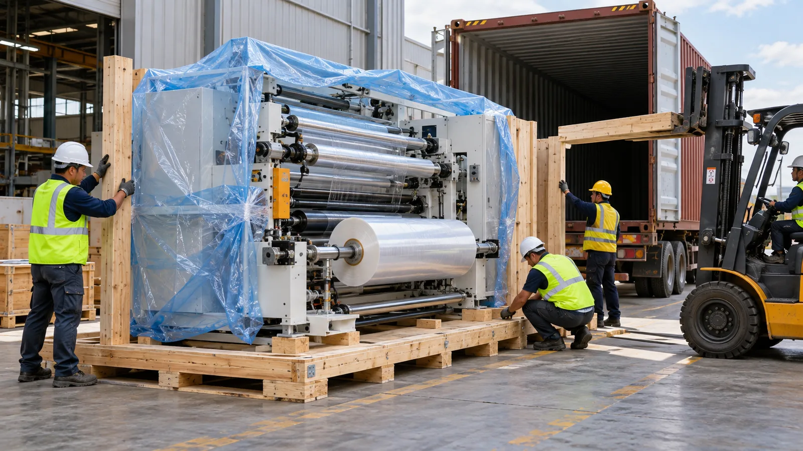
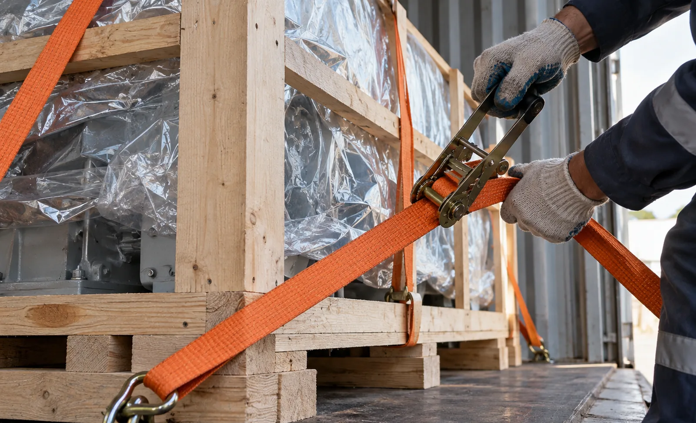

Published September 27, 2026 | By HDPTH Technical Editorial Team

Buyers spend weeks comparing slitting specifications and then give twenty minutes of attention to how the machine will actually arrive. For imported machinery the delivery track creates real risk: a machine crated badly arrives with a distorted roll path, a misclassified shipment sits in a bonded warehouse accruing storage, and a delivery signed without notes can void an insurance claim. All of it must be arranged in the contract, not after it.
Choosing the right Incoterm for machinery
Incoterms allocate tasks, costs and risk between seller and buyer; the International Chamber of Commerce publishes the current rules contracts reference. The practical choice for industrial machinery narrows to a few rules:
- EXW (Ex Works) — buyer does everything from the factory floor onward, including export clearance. Avoid unless you have a trusted agent in the supplier’s country.
- FOB (Free on Board) — supplier delivers onto the vessel; buyer controls ocean freight, insurance and import. The default for experienced importers who want freight control.
- CIF (Cost, Insurance and Freight) — supplier arranges ocean freight and minimum insurance to the destination port; risk still transfers at loading, and the buyer relies on the supplier’s forwarder.
- DAP (Delivered at Place) — supplier manages transport to your named plant; buyer handles import clearance and duties. Clean for first-time importers.
- DDP — supplier even clears import and pays duties. Rare for machinery because it forces the exporter to become importer of record in your country.
Whatever the rule, name the place precisely — "FOB Shanghai" and "DAP Buyer Plant, Ohio" are enforceable; "FOB China" is not. Also confirm who books, who insures for full machine value, and who pays terminal handling — the gaps between Incoterms are where disputes live.
Packing that survives the ocean
Packing that survives the ocean starts at the factory, where most transit damage is prevented. The specification should require seaworthy packing: heavy timber or steel-skid crates with the machine bolted down, moisture-barrier wrap and desiccants for long transits, rollers and web path protected against denting, control cabinets padded against shock, knives removed or locked, and all loose parts boxed with an itemized packing list. Ask for photos of the crated machine before the container closes. Two details matter more than buyers expect: confirm crate dimensions and weights against the container or flat-rack limits before agreeing the freight plan, and keep the packing list consistent with the commercial invoice — clearance stalls on every mismatch.
Shipping modes for oversize machines
A compact slitter rewinder ships inside a 40-foot high-cube container — the cheapest and safest mode. Wider machines travel on flat racks or open-top containers, where the cargo becomes visible to weather and handling, making lashing quality worth inspection. Complete converting lines occasionally move as breakbulk. Transit on the major lanes typically runs three to six weeks. Two parallel tracks reduce total delay: airfreight the commissioning-critical spares, tooling and documentation set separately, and schedule site preparation — covered in our site preparation checklist — while the vessel is at sea.
| Incoterm | Supplier’s responsibility ends | Best for |
|---|---|---|
| EXW | Made available at factory door; buyer arranges export, freight, insurance | Buyers with an agent in the supplier country |
| FOB | Goods on board the vessel at named port | Experienced importers with their own forwarder |
| CIF | Freight and minimum insurance paid to destination port; risk transfers at loading | Buyers who want simpler logistics but can clear imports |
| DAP | Transport to named plant; buyer clears import and pays duties | First-time machinery importers wanting one transport partner |

Customs, classification and the document set
Customs authorities classify goods with HS codes, maintained internationally by the World Customs Organization and adapted nationally. Winding and reeling machinery has its own heading family, but the correct code and duty rate depend on the machine’s construction and function — your customs broker should confirm the classification before shipment. The document set for clearance is short and unforgiving: a commercial invoice detailed enough to describe the machine, a packing list matching every crate, the bill of lading, a certificate of origin when a trade agreement reduces duty, and any permits required. Insurance deserves its own attention: marine cargo cover for the full machine value, agreed before loading — and CIF’s "minimum cover" is rarely enough for machinery.
Delivery day: protect the claim window
The last kilometre is where insurance claims are won or lost. Count crates against the packing list before signing; inspect for crush damage, water staining or re-strapped crates; photograph anything doubtful; and write exceptions on the carrier’s receipt — a clean signature reads as "arrived perfect." Only then uncrate, check the machine against the contract and packing list, confirm manuals, certificates and spares arrived, and look inside cabinets for loosened terminals. Transit damage claims typically run on windows of days, not weeks, so notify the carrier and insurer immediately and keep all packaging until the survey closes. From there, commissioning proceeds as in any delivery — our commissioning checklist picks up the story.
Planning an international machine purchase?
HDPTH ships converting equipment worldwide and quotes with the delivery terms spelled out — Incoterm, crating standard, document set and airfreight track for spares. Tell us your destination port or plant.
Submit Your Project InquiryFrequently asked questions
Which Incoterm works best for buying a slitter rewinder from an overseas supplier?
FOB and CIF suit buyers with their own freight forwarders and experience importing industrial machinery; DAP suits buyers who want the supplier to manage transport to the factory gate while handling import clearance themselves; EXW is best avoided unless the buyer has an agent in the supplier’s country, because it leaves export clearance and loading risk with the buyer. For machinery, DAP or FOB give the clearest split of responsibility for most first-time importers, and the chosen rule should be written with its named place — port or plant — in the contract.
How should a slitter rewinder be packed for sea freight?
Seaworthy packing for a slitter rewinder means a heavy-duty wooden crate or steel skid with the machine bolted down, moisture-barrier wrapping and desiccants for long ocean transits, loose parts boxed and inventoried, knives removed or locked, and control cabinets protected against vibration. Confirm crate dimensions and weight against container or flat-rack limits, and require packing photos and a detailed packing list before the machine leaves the factory — claims become difficult once the crate is accepted at destination.
How is an industrial machine shipped — container, flat rack or breakbulk?
Machines that fit inside a 40-foot high-cube container ship at the lowest cost and risk; wider or taller machines travel on flat racks or open tops; very large complete lines may move as breakbulk or on project vessels. Transit time on major trade lanes typically runs three to six weeks. Spare parts and documentation sets can move by air separately so commissioning is not delayed by the slowest shipment, and the delivery schedule should plan these tracks in parallel.
What documents does customs clearance of a slitter rewinder require?
The core set is a detailed commercial invoice, a packing list matching every crate, the bill of lading or air waybill, a certificate of origin where a trade agreement gives duty relief, and the HS classification that determines duty rate. Many slitter rewinders fall under headings for winding and reeling machinery, but classification is goods-specific and the buyer should confirm the code and duty rate with their customs broker before shipment. Incomplete or inconsistent documents are the most common cause of clearance delay and storage charges.
What should be checked on delivery day before accepting the machine?
Count crates against the packing list, inspect each crate for damage or water staining and photograph anything doubtful before opening, note exceptions on the carrier’s delivery receipt, and only then uncrate. Check the machine against the contract specification and packing list, confirm manuals, spares and certificates arrived, and inspect inside cabinets for transit damage such as loosened terminals. Report visible damage within the claim window — usually days, not weeks — while keeping all packaging until the survey is complete.